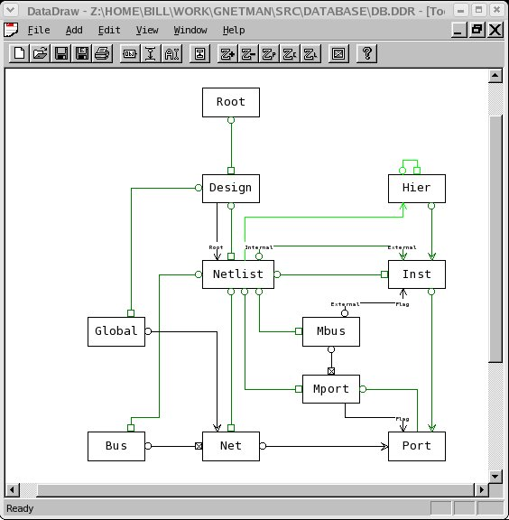

Anyone interested in working with gnetman to create new netlist maniputlation tools first needs to understand the datastructures. This means working with DataDraw schemas, which is a class diagramming tool used by gnetman.

Here's a quick one-liner about each class in the database schema:
Root
Just a name-based hash table of designs so you can
find a design given it's name.
Design
The top level for a
hierarchical structural design. It has a name, and a hash table
(by name) of netlists. Designs point to the root netlist, and
also have a name-based hash table of Globals. Usually, there is
one file for a Design. Libraries are considered as different
Designs. Eventually, when the .INCLUDE instruction will be
supported, there will be more than one file to describe a
Design.
Globals
Just global nets. Global nets have a
list of local nets in the various netlists that map to
them.
Netlist
This is basically the result of one
schematic. There are name based hash tables of nets, instances,
and the I/O ports, called Mports (for master port). Mports can
be grouped into bus ports called Mbus, which are also hashed by name.
Nets can be grouped into Bus objects that are also hashed by
name. In the spice world, a netlist correspond to a subckt.
Inst
Netlist instances, some of which represent sub-netlists.
Instances are inside their owning netlists, but also can have
an "Internal" netlist that is the sub-netlist represented
by the instance. Instances have doubly linked lists of their
ports.
Net
Nets within a schematic. They have doubly
linked lists of their ports.
Port
I/Os of instances.
These objects are used to connect instances to nets, and will always
have an owning mport that has info like the port name on it.
Mport
Mports (for Master port) describe the I/Os of a netlist.
They correspond to flag instances inside the schematic. A
netlist like NAND2 might have a single Mport named Z, but there can
be 10,000 instances of the NAND2. In this case, there will be
only one Mport for Z, and that's where the name Z is stored, along
with information like whether the port is an input or output. Each
of the 10,000 instances of the NAND2 will be represented with an Inst
object, and there will be a Port object on each of them corresponding
to the Z mport.
Bus
Busses are a simple class that have an
array of nets.
Mbus
Mbusses represent I/O busses.
Hier
This class is a somewhat new concept for me. In the past,
I've just used the netlist/inst relationships to keep track of the
hierarchy. The problem is that the first thing we often do is
flatten the design. This results in a few problems.
First, names get really long for large designs. They can use up
a large portion of the memory. Second, we loose the hierarchy
info, which often is needed later. For example, the Altera
back-end tools make good use of hierarchy, even if it's uniquified.
This means some poor guy has to recreate hierarchy from net names,
which is generally buggy. Or, perhaps we want to see the
results of synthesis, but want the gates presented in a hierarchy as
similar to the original as possible. Another problem is that
early on, before flattening, there's no place to put instance
attributes. This leads most systems to have some kind of hacked
hierarchy object anyway.